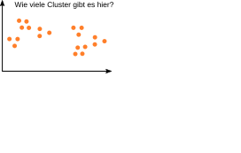
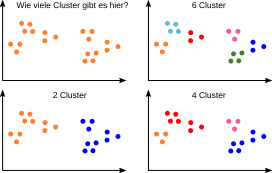
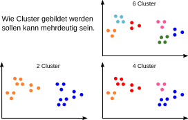
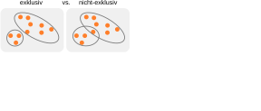
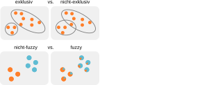
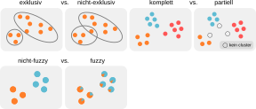
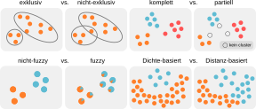
Unterschiedliche Clustering-Verfahren führen zu Clustern mit unterschiedlichen Eigenschaften.
Algorithmus: In jedem Schritt verbinde die beiden Cluster mit der größten Ähnlichkeit.

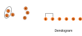
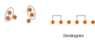
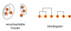
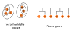
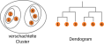
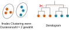
Führe ein hierarchisches Clustering für die dargestellten Datenpunkte basierend auf ihrer euklidischen Distanz aus und zeichne ein Dendogramm. Was für eine Gruppierung ergibt sich für k=3 Cluster?
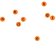
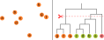
Ausgehend von einem gegebenen Clustering, verlagere Datenpunkte in andere Cluster um ein besseres Clustering zu finden.
Um das beste Clustering zu finden, optimieren wir eine Zielfunktion.
Beispiel: "Fehlersumme".


Die Fehlerquadratsumme wird auch als "Sum of Squared Errors" (SSE) bezeichnet.
Die Fehlerquadratsumme wird auch als "Sum of Squared Errors" (SSE) bezeichnet.
ein Algorithmus zum finden von Clustern
Intuition: Ausgehend von einem gegebenen Clustering, verlagere Datenpunkte in andere Cluster um die Fehlerquadratsumme (SSE) zu reduzieren.
- Gib ein Clustering vor.
- Berechne den Mittelwert je Eigenschaft & Cluster.
- Berechne SSE über das gesamte Clustering.
- Für alle Datenpunkte: überprüfe ob durch Veränderung der Cluster-Zugehörigkeit SSE verringert werden kann.
- Verschiebe den Datenpunkt mit maximaler Fehlerreduktion in den entsprechenden Cluster.
- Berechne neue Mittelwerte aller Eigenschaften für den empfangenden und abgebenden Cluster.
Wiederhole Schritte 4. – 6. bis sich keine Reduktion der Fehlerquadratsumme SSE mehr ergibt.

{kind=link}
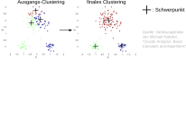
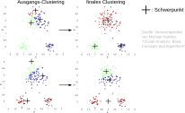
→ Wiederhole das Clustering-Verfahren mehrmals mit unterschiedlichen Ausgangs-Clusterings.
Silhouettenkoeffizient: misst, wie ähnlich eine Beobachtung anderen Beobachtungen im selben Cluster ist (Kohäsion) verglichen mit Beobachtungen in anderen Clustern (Separierung). Dabei ist 1 sehr gut und -1 sehr schlecht.
- ai: mittlere Distanz der Beobachtung i zu allen anderen Beobachtungen im selben Cluster.
- bi: mittlere Distanz zum nächsten anderen Cluster.
- Der Silhouettenkoeffizient ist der Mittelwert von ai und bi über alle Beobachtungen.
K-means führt zu unintuitiven Ergebnissen wenn die Cluster ...
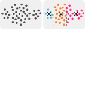

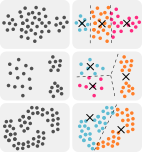
→ Dichte-basiertes Clustering
- Clusterings können unterschiedliche Eigenschaften haben.
- exklusiv vs. nicht exklusiv
- komplett vs. partiell
- dichte-basiert vs. distanzbasiert
- Unterschiedliche Clusteringverfahren produzieren unterschiedliche Clusterings
- Hierarchische Verfahren
- Partitionierende Verfahren (k-Means)